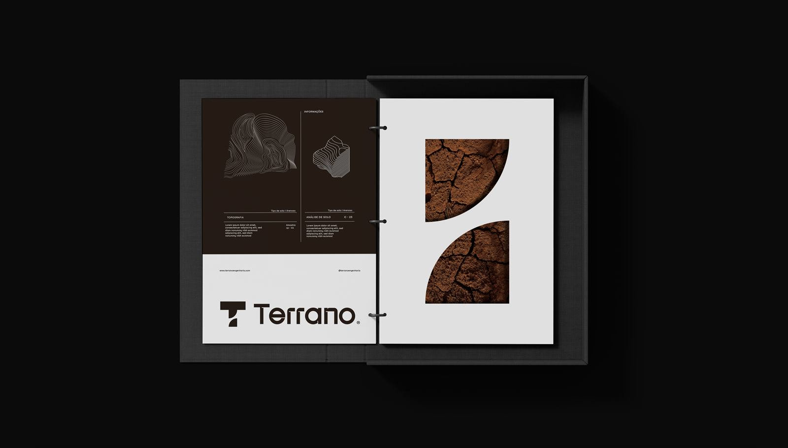

Topografia de precisão para projetar e construir certo.
Levantamentos planialtimétricos, locação de obras, desmembramentos e mapeamento aéreo com drone em Foz do Iguaçu e região. Equipamentos GNSS RTK, estação total e entrega em formatos prontos para o projeto.
O terreno medido antes de qualquer decisão.
Toda obra começa por um levantamento confiável. Erros aqui viram prejuízo lá na frente — por isso tratamos a topografia como engenharia, não como formalidade.
Levantamento planialtimétrico
Medidas, limites, curvas de nível e elementos existentes do terreno — a base para o projeto arquitetônico e de terraplenagem.
Locação de obra
Gabarito, eixos, estacas e pilares marcados com precisão milimétrica direto do projeto estrutural.
Desmembramento e unificação
Plantas de subdivisão, unificação ou desmembramento de lotes com memorial descritivo para aprovação.
Georreferenciamento
Georreferenciamento de imóveis rurais e urbanos com GNSS RTK, conforme exigências de cartório e órgãos oficiais.
Mapeamento com drone
Ortomosaico, modelo digital de terreno e acompanhamento de obra por imagens aéreas georreferenciadas.
Volumetria e as built
Cálculo de corte e aterro, controle de terraplenagem e cadastro final do que foi executado.

Precisão de campo, arquivos prontos para o escritório.
Trabalhamos com equipamentos atuais e entregamos os dados no formato que o seu projetista precisa.
- GNSSReceptores RTK para coordenadas georreferenciadas
- ETEstação total para locação e levantamentos de detalhe
- VANTDrone para aerolevantamento e nuvem de pontos
- DWGPlantas em DWG/PDF, memoriais e relatórios com ART
Perguntas sobre topografia
Qual a diferença entre levantamento planimétrico e planialtimétrico?
Preciso de topografia para aprovar o projeto na prefeitura?
Quanto tempo leva um levantamento?
Vocês fazem a locação da obra que a Terrano não está construindo?
Precisa de um levantamento?
Envie a localização do imóvel e o objetivo do serviço. Retornamos com orçamento e prazo.
Chamar no WhatsApp- WhatsApp(45) 99937-1887
- E-mailcontato@terranoengenharia.com
- Instagram@terranoengenharia
- EndereçoRua Ali Osman, 222 — Jardim Panorama
Foz do Iguaçu — PR